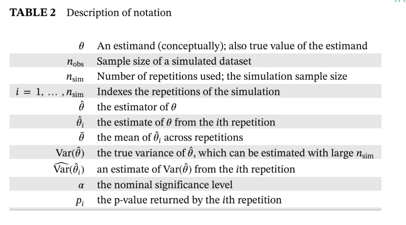
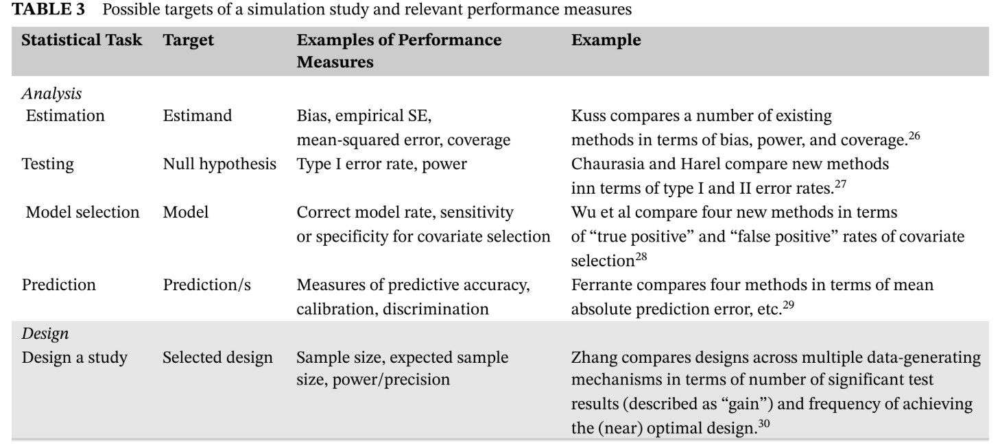
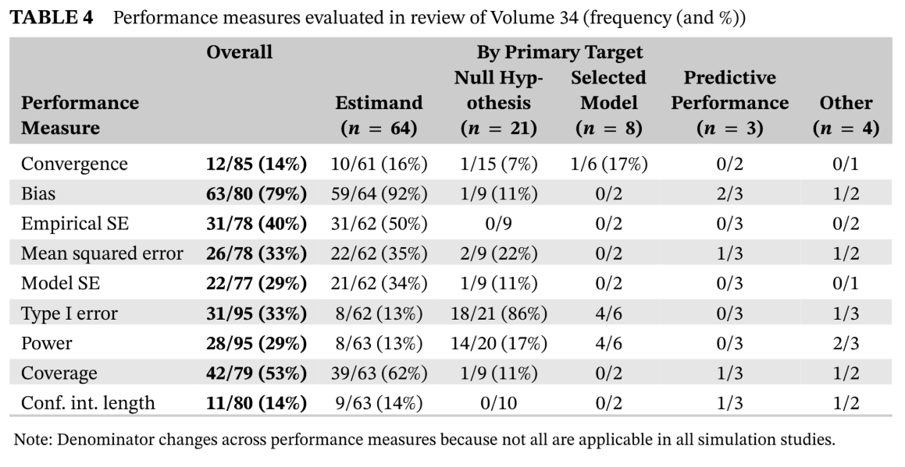
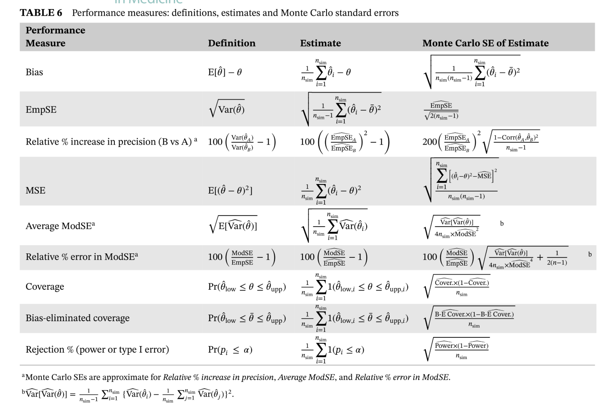

1 Abstract
Simulation studies are computer experiments that involve creating data by pseudo-random sampling. A key strength of simulation studies is the ability to understand the behavior of statistical methods because some “truth” (usually some parameter/s of interest) is known from the process of generating the data. This allows us to consider properties of methods, such as bias. While widely used, simulation studies are often poorly designed, analyzed, and reported. This tutorial outlines the rationale for using simulation studies and offers guidance for design, execution, analysis, reporting, and presentation. In particular, this tutorial provides a structured approach for planning and reporting simulation studies, which involves defining aims, data-generating mechanisms, estimands, methods, and performance measures (“ADEMP”); coherent terminology for simulation studies; guidance on coding simulation studies; a critical discussion of key performance measures and their estimation; guidance on structuring tabular and graphical presentation of results; and new graphical presentations. With a view to describing recent practice, we review 100 articles taken from Volume 34 of Statistics in Medicine, which included at least one simulation study and identify areas for improvement.
2 Introduction
Simulation studies are computer experiments that involve creating data by pseudo-random sampling from known probability distributions. They are an invaluable tool for statistical research, particularly for the evaluation of new methods and for the comparison of alternative methods. Simulation studies are much used in the pages of Statistics in Medicine, but our experience is that some statisticians lack the necessary understanding to execute a simulation study with confidence, while others are overconfident and so fail to think carefully about design and report results poorly. Proper understanding of simulation studies would enable the former to both run and critically appraise published simulation studies themselves and the latter to conduct simulation studies with greater care and report with transparency. Simulation studies are empirical experiments, and statisticians should therefore use knowledge of experimental design and analysis in running them. As we shall see, inadequacies with design, analysis, and reporting lead to uncritical use and interpretation of simulation studies. In this context, better understanding of the rationale, design, execution, analysis, and reporting of simulation studies is necessary to improve understanding and interpretation of the findings.
Simulation studies are used to obtain empirical results about the performance of statistical methods in certain scenarios, as opposed to more general analytic (algebraic) results, which may cover many scenarios. It is not always possible, or may be difficult, to obtain analytic results. Simulation studies come into their own when methods make wrong assumptions or data are messy because they can assess the resilience of methods in such situations. This is not always possible with analytic results, where results may apply only when data arise from a specific model. “Monte Carlo simulation” means statistical techniques that use pseudo-random sampling, and has many uses that are not simulation studies. For example, it is required to implement multiple imputation and Markov Chain Monte Carlo methods. The remainder of this paper does not consider these uses, unless the properties of some such method are being evaluated by a simulation study. There are many ways to use simulation studies in medical statistics. Some examples are:
To check algebra (and code), or to provide reassurance that no large error has been made, where a new statistical method has been derived mathematically.
To assess the relevance of large-sample theory approximations (eg, considering the sampling distribution of an estimator) in finite samples.
For the absolute evaluation of a new or existing statistical method. Often a new method is checked using simulation to ensure it works in the scenarios for which it was designed.
For comparative evaluation of two or more statistical methods.
For calculation of sample size or power when designing a study under certain assumptions.1
This article is focused primarily on using simulation studies for the evaluation of methods. Simulation studies for this purpose are typically motivated by frequentist theory and used to evaluate the frequentist properties of methods, even if the methods are Bayesian.2,3 It seems that as a profession we fail to follow good practice regarding design, analysis, presentation and reporting in our simulation studies, as lamented previously by Hoaglin and Andrews,4 Hauck and Anderson,5 Ripley,6 Burton et al,7 and Koehler et al.8 For example, few reports of simulation studies acknowledge that Monte Carlo procedures will give different results when based on a different set of random numbers and hence are subject to uncertainty, yet failing to report measures of uncertainty would be unacceptable in medical research. There exist some wonderful books on simulation methods in general6,9,10 and several excellent articles encouraging rigor in specific aspects of simulation studies,1,4,5,8,11-16 but until now, no unified practical guidance on simulation studies. This tutorial provides such guidance. More specifically, we: introduce a structured approach for planning and reporting simulation studies; provide coherent terminology for simulation studies; offer guidance on coding simulation studies; critically discuss key performance measures and their estimation; make suggestions for structuring tabular and graphical presentation of results; and introduce several new graphical presentations. This guidance should enable practitioners to execute a simulation study for the first time and contains much for more experience practitioners. For reference, the main steps involved, key decisions and recommendations are summarised in Table 1. The structure of this tutorial is as follows.
We describe a review of a sample of the simulation studies reported in Statistics in Medicine Volume 34 (Section 2).
In Section 3, we outline a systematic approach to planning simulation studies, using the new “ADEMP” structure (which we define there). Section 4 gives guidance on computational considerations for coding simulation studies.
In Section 5, we discuss the purposes of various performance measures and their estimation, stressing the importance of estimating and reporting the Monte Carlo standard error (SE) as a measure of uncertainty due to using a finite number of simulation repetitions.
Section 6 outlines how to report simulation studies, again using the ADEMP structure, and offers guidance on tabular and graphical presentation of results.
Section 7 works through a simple simulation to illustrate in practice the approaches that we are advocating.
Section 8 offers some concluding remarks, with a short Section 8.1 that considers some future directions. Examples are drawn from the review and from the authors’ areas of interest (which relate mainly to modeling survival data, missing data, meta-analysis, and randomised trial design).
3 Section2：SIMULATION IN PRACTICE: A REVIEW OF STATISTICS IN MEDICINE, VOLUME 34
We undertook a review of practice based on articles published in Volume 34 of Statistics in Medicine (2015). This review recorded information relevant to the ideas in this article. In this section, we briefly outline the review but do not give results, which instead are provided at relevant points. The raw data on which results are based are provided as a Stata file in the supplementary materials (see file “volume34reviewdata.dta”; pared down, without comments).
We restricted attention to research articles, excluding tutorials in biostatistics, commentaries, book reviews, corrections, letters to the editor and authors’ responses. In the volume, there were a total of 264 research articles of which 199 (75%) included at least one simulation study. In planning the review, we needed to select a sample size. Most of the questions of interest involved binary answers. For such questions, to estimate proportions with maximum standard error of 0.05 (occurring when the proportion is 0.5), we randomly selected 100 articles that involved a simulation study, before randomly assigning articles to a reviewer. TPM reviewed 35 simulation studies, IRW reviewed 34 and MJC reviewed 31. In case the reviewer was an author or coauthor of the article, the simulation study was swapped with another reviewer. TPM also reviewed five of the simulation studies allocated to each of the other reviewers to check agreement on key information (results on agreement are given in the Appendix and Figure A1).
4 Section3:PLANNING SIMULATION STUDIES USING ADEMP
For clarity about the concepts that will follow, we introduce some notation in Table 2. Note that θ is used to represent a connceptual estimand and its true value.

In the following sections, we outline the ADEMP structured approach to planning simulation studies.
This acronym comes from: Aims, Data-generating mechanisms, Methods, Estimands, Performance measures.
4.1 3.1 Aims
In considering the aims of a simulation study, it is instructive to first consider desirable properties of an estimator θ̂ from a frequentist perspective.
- \hat \theta should be consistent: as n → ∞, \hat \theta → \theta. It is also desirable that \hat \theta be unbiased for \theta in finite samples: E[\theta]=\theta (though arguably less important since unbiasedness is not an invariant property). Some estimators may be consistent but exhibit small-sample bias (logistic regression for example).
- The sample estimate \hat V[\theta] should be a consistent estimate of the sampling variance of \hat \theta (see, for example, the work of Kenward and Roger.18)
- Confidence intervals should have the property that at least 100(1 − α)% of intervals contain θ (see Section 5.2).
- It is desirable that \hat V[\theta] be as small as possible: that \hat \theta be an efficient estimator of \theta.
There are other properties we might desire, but these tend to involve combinations of the above. For example, short average confidence interval length may be desirable; this relates to (4) and its validity depends on (1), (2), and (3). Mean squared error is a combination of (1) and (4). Further, properties may be traded off; small bias may be accepted if there is a substantial reduction in Var ̂(θ). The aims of a simulation study will typically be set out in relation to the above properties, depending on what specifically we wish to learn. A simulation study might primarily investigate: large- or small-sample bias (eg, see the work of White19); precision, particularly relative to other available methods (eg, see the work of White20); Variance estimation (eg, see the work of Hughes et al21); or robustness to misspecification (eg, see the work of Morris et al22). There is a distinction between simulation studies that offer a proof-of-concept, ie, showing that a method is viable (or fallible) in some settings, and those that aim to stretch or break methods, ie, identifying settings where the method may fail. Both are useful and important in statistical research. For example, one may be faced with two competing methods of analysis, both of which are equally easy to implement. Even if the choice is unlikely to materially affect the results, it may be useful to have unrealistically extreme data-generating mechanisms to understand when and how each method fails.22 Alternatively, it may be of interest to compare methods where some or all methods have been shown to work in principle but the methods under scrutiny were designed to address slightly different problems. They may be put head-to-head in realistic scenarios. This could be to investigate properties when one method is correct – How badly do others fail? – or when all are incorrect in some way – Which is most robust? No method will be perfect, and it is useful to understand how methods are likely to perform in the sort of scenarios that might be expected in practice. However, such an approach poses tough questions in terms of generating data: Does the data-generating mechanism favor certain methods over others? How can this be checked and justified? One common justification is by reference to motivating data. However, in the absence of a broad spectrum of such motivating data, there is a risk of failing to convince readers that a method is fit for general use.
4.2 3.2 Data-generating mechanisms
We use the term “data-generating mechanism” to denote how random numbers are used to generate a dataset. This is in preference to “data-generating model,” which implies parametric models and so is a specific class of data-generating mechanism. It is not the purpose of this article to explain how specific types of data should be generated. See Ripley6 or Morgan9 for methods to simulate data from specific distributions. In planning a simulation study, it is usual to spend more time deciding on data-generating mechanisms than any other element of ADEMP. There are many subtleties and potential pitfalls, some of which we will mention below. Data may be generated by producing parametric draws from a known model (once or many times), or by repeated resampling with replacement from a specific dataset (where the true data-generating model is unknown). For resampling studies, the true data-generating mechanism is unknown and resamples are used to study the sampling distribution. While parametric simulation can explore many different data-generating mechanisms (which may be completely unrealistic), resampling typically explores only one mechanism (which will be relevant for at least the study at hand). The choice of data-generating mechanism(s) will depend on the aims. As noted above, we might investigate a method under a simple data-generating mechanism, a realistic mechanism, or a completely unrealistic mechanism designed to stretch a method to breaking point.
Simulation studies provide us with empirical results for specific scenarios. For this reason, simulation studies will often involve more than one data-generating mechanism to ensure coverage of different scenarios. For example, it is very common to vary the sample size of simulated datasets because performance often varies over nobs (see Section 5.2). Much can be controlled in a simulation study and statistical principles for designing experiments therefore can and should be called on.
In particular, there is often more than one factor that will vary across specific data-generating mechanisms. Factors that are frequently varied are sample size (several values) and true parameter values (for example, setting one or more parameters to be zero or nonzero). Varying these factorially is likely to be more informative than one-by-one away from a “base-case” data-generating mechanism, as doing so permits the exploration of interactions between factors. There are however practical implications that might make this infeasible. The first regards presentation of results (covered in Section 6) and the second computational time. If the issue is simply around presentation, it may be preferable to define a “base case” but perform a factorial simulation study anyway, and if results are consistent with no interaction, presentation can vary factors away from the base case one-by-one. If the main issue with executing a fully factorial design is computational time, it may be necessary for the simulation study to follow a non factorial structure. Three approaches are noted below.
A first pragmatic check may be to consider interactions only where main effects exist. If performance seems acceptable and does not vary according to factor A, it would seem unlikely to have chosen a data-generating mechanism that happened to exhibit this property when performance would have been poor for other choices of data-generating mechanism.
A more careful approach could be taken based on making and checking predictions beyond the data-generating mechanisms initially used; an idea similar to external validation. Suppose we have two factors, A and B, where A ∈ {1, … , 8} and B ∈ {1, … , 5} in the data-generating mechanism. The base-case is A = 1, B = 1. If the nonfactorial portion of the design varies A from 1 to 8 holding B = 1, and varies B from 1 to 5 holding A = 1, this portion of the simulation study could be used to predict performance when A = 8, B = 5. Predictions may be purely qualitative (“bias increases as A increases and as B increases, so when we increase both together, we would expect even larger bias”), or quantitative (based on the marginal effects after fitting a model to existing results, thereby producing explicit predictions at unexplored values of A and B). The simulation study can then be re-run for that single data-generating mechanism, say A = 8, B = 5 and predictions compared with the empirical results (with a responsibility to expore further when predictions are poor or incorrect). Finally, a more satisfactory solution is of course to use a fractional factorial design for the data-generating mechanisms.3,23
We now issue some specific pitfalls to help readers in choosing data-generating mechanisms (specifically acknowledg- ing Stephen Senn’s input).
Resampling with replacement from a dataset but failing to appreciate that results are relevant to an infinite population with the exact characteristics of that dataset. For example, if a trial had a nonsignificant result, the treatment effect is nonzero in the implicit population.24
Missing the distinction between the logical flow of Bayesian and frequentist simulation. Repeated simulation with a single parameter value is explicitly frequentist. The fact that θ̂ is on average equal to θ does not imply that θ is on average equal to θ̂.
Failing to distinguish between what the simulator can know and what the estimator can know.25
Employing tricks in data-generation without appreciating that the resulting data are not what was desired. As an example, suppose one wishes to simulate bivariate data with a desired R2, say 0.3. For any given repetition, the observed R2 will not equal 0.3, but this could be fixed by scaling the residuals. This would produce unintended side effects for other statistics.
In our review, 97 simulation studies used some form of parametric model to generate data while three used resampling methods. Of the 97 that simulated from a parametric model, 27 based parameter values on data, one based parameter values partly on data, and the remaining 69 on no data. Of these 97, 91 (94%) provided the parameters used. The most careful example26 explored analysis of meta-analysis data and drew the design factors from empirical data on 14,886 performed meta-analyses from 1,991 Cochrane Reviews. The total number of data-generating mechanisms per simulation study ranged from 1 to 4.2 × 1010; Figure A2 (in the Appendix) summarises aspects of the data-generating mechanisms. Where more than one factor was varied, fully factorial designs were the most frequent, while some used partially factorial designs. None used any of the alternative approaches we have described.
4.3 3.3 Estimands and other targets
The majority of simulation studies evaluate or compare methods for estimating one or more population quantities, which we term estimands and denote by θ. An estimand is usually a parameter of the data generating model, but is occasionally some other quantity. For example, when fitting regression models with parameter β = (β0 … βc), the estimand may be a specific β, a measure of prognostic ability, the fitted outcome mean, or something else. In order to choose a relevant estimand, it is important to understand the aims of analysis in practice. The choice of estimand is sometimes a simple matter of stating a parameter of interest. At other times, it is more subtle. For example, a logistic regression model unadjusted for covariates implies a marginal estimand; a model adjusted for covariates implied a conditional estimand with a different true value (this example is expanded on in Section 3.4). Not all simulation studies evaluate or compare methods that concern an estimand. Other simulation studies evaluate methods for testing a null hypothesis, for selecting a model, or for prediction. We refer to these as targets of the simulation study. The same statistical method could be evaluated against multiple targets. For example, the best method to select a regression model to estimate the coefficient of an exposure (targeting an estimand) may differ from the best model for prediction of outcomes (targeting prediction). Where a simulation study evaluates methods for design, rather than analysis, of a biomedical study, the design is the target. Table 3 summarises different possible targets of a simulation study and suggests some performance measures (described more fully in Section 3.5) that may be relevant for each target, with examples taken from Volume 34.
In our review, 64 simulation studies targeted an estimand, 21 targeted a null hypothesis, eight targeted a selected model, three targeted predictive performance, and four had some other target. Of the 64 targeting an estimand, 51 stated what the estimand was (either in the description of the simulation study or elsewhere in the article). A figure detailing the number of estimands in simulation studies that targeted an estimand is given in the Appendix, Figure A3.

4.4 3.4 Methods
The term “method” is generic. Most often it refers to a model for analysis, but might refer to a design or some procedure (such as a decision rule). For example, Kahan31 and Campbell and Dean32 evaluated procedures that involved choosing an analysis based on the result of a preliminary test in the same data. In some simulation studies, there will be only one method with no comparators. In this case, selecting the method to be evaluated is very simple. When we aim to compare several methods in order to identify the best, it is important to include serious contenders. There are two issues. First, it is necessary to have knowledge of previous work in the area to understand which methods are and are not serious contenders. Some methods may be legitimately excluded if they have already been shown to be flawed, and it may be unnecessary to include such methods if the only consequences are repetition of previous research and bloating
4.5 3.5 Performance measures
The term “performance measure” describes a numerical quantity used to assess the performance of a method. The equivalent term “operating characteristic” is sometimes used, particularly in the context of study designs (see, for example, the work of Royston et al39). Statistical methods for estimation may output for example an estimate \hat \theta_i , an estimate of variance \hat V[\hat \theta_i] (or standard error SÊ(θ̂)i), degrees of freedom, confidence intervals, test statistics, and more (such as an estimate of prognostic performance). The performance measures required in a simulation study depend on the aims and what the study targets (see Section 3.3). When the target is an estimand, the most obvious performance measure to consider is bias: the amount by which \hat \theta exceeds θ on average (this can be positive or negative). Precision and coverage of (1 − α ) confidence intervals will also be of interest. Meanwhile, if the target is a null hypothesis, power and type I error rates will be of primary interest. A simulation study targeting an estimand may of course also assess power and type I error. The performance measures seen in our review are summarised in Table 4. The denominator changes according across performance measures because some are not applicable for some simulation studies. Further, sometimes simulation studies had secondary targets. For example, nine simulation studies primarily targeted a null hypothesis but secondarily targeted an estimand and could have assessed bias, and one of these did so. For eight articles, some performance measures were unclear. In some, a performance measure was given a name that its formula demonstrated to be misleading (an example is the term “mean error,” which is bias, when the formula is for mean absolute error), emphasizing the importance of clear terminology in simulation studies.
Description and estimation of common performance measures of interest are given in Section 5. An important point to appreciate in design and analysis is that simulation studies are empirical experiments, meaning performance measures are themselves estimated, and estimates of performance are thus subject to error. This fundamental feature of simulation studies does not seem to be widely appreciated, as previously noted.6 The implications are two-fold. First, we should present estimates of uncertainty (quantified as the Monte Carlo standard error; see Section 5.2). Second, we need to consider the number of repetitions nsim and how this can be chosen (see Section 5.2).

5 4 COMPUTATIONAL AND PROGRAMMING ISSUES IN SIMULATION STUDIES
In this section, we discuss consideration when coding a simulation study. It is useful to understand what sort of data are involved. There may be up to four classes of dataset, listed and described in Table 5.
5.1 4.1 Random numbers: setting seeds and storing states
All statistical packages capable of Monte Carlo simulation use a pseudo-random-number generator. Each random number is a deterministic function of the current “state” of the random-number generator. After a random number is produced,the state changes, ready to produce the next random number. Because the function is deterministic, the state can be set.Typically, the state is set using a “seed.” Seeds do not necessarily map 1:1 to states and provide doors onto the path of possible states. After enough random-number draws (a very large number in software using modern pseudo-random-number generators), the state will eventually repeat: the path is circular. The “pseudo” element to random-number generators is sometimes characterised as negative. This is perhaps an artefact of the fact that some early algorithms provided very poor imitations of random numbers. However, modern-era algorithms such as the Mersenne Twister do not suffer from these problems and can, for simulation purposes, be regarded as truly random when used correctly. The toss of a coin or roll of a die may be regarded as equally deterministic, albeit the result of a complex set of unknown factors that act in an uncontrollable fashion. These are not denigrated with the term “pseudo-random”: in statistical teaching, they are often given as the ultimate example of randomness. However, many stage magicians can control the flip of a coin! If a computer pseudo-random number generator is sufficiently unpredictable and passes the various tests for randomness, it is churlish to regard the “pseudo” aspect as a weakness.
There are several positive implications of using a deterministic and reproducible process for generating random num- bers. First, if the number of repetitions is regarded as insufficient, the simulation study can continue from its end state.
Second and more importantly, if a certain repetition results in some failure such as nonconvergence, the starting state for that repetition can be noted and the repetition re-run under that state, enabling better understanding of when the method
does not work so that issues leading to nonconvergence can be tackled. Finally, the whole simulation study can be inde- pendently run by other researchers, giving the potential for exact (rather than approximate) reproduction of results and
the scope for additional methods to be included. Our practical advice for utilizing the deterministic nature of random-number generators is simple but strong: (1) set the seed at the beginning, once and only once; (2) store the state of the random-number generator often (ideally once at the beginning of each repetition and once following repetition i = nsim). This is important; the following chunk of pseudocode demonstrates the concept:
The reason for this advice is to avoid unintended dependence between simulated datasets. We will illustrate our caution: one undesirable method of knowing the states for nsim repetitions is to set an initial seed and generate a single vector of length nsim by recording the starting state, generating a single random number, recording the new state, and so on. For the simulation itself, the seed for the ith repetition is then set to the ith element. To clarify the problem, let nobs = nsim = 4 and let the first simulation step be generation of vector x from a Uniform(0,1) distribution. The first repetition simulates x1 (which changes the random number state four times) and proceeds. The second repetition then simulates x2, which is made up of observations 2 to 4 from repetition i = 1 and just one new value. Run in Stata 15 (see supplementary material, ie, file “corrstates.do”), the resulting draws of x for the four repetitions are: Note that elements with the same shading contain the same values across rows. The fourth element of x1 is the first element of x4 and appears in all repetitions. Only when i > nobs is the draw of x actually independent of the first repetition. Such dependency in simulated data can compromise both performance estimates and Monte Carlo SEs and must be avoided.
5.2 4.1.1 “Stream” random numbers
It is common for parts of simulation studies – fractions of all the repetitions, for example – to be run in parallel on different cores of high-performance computers (which this article will not mention further). If the advice to set the seed once only is followed, the implication for parallelisation is that, while runs for different data-generating mechanisms may be parallelised, it is inadvisable to parallelise repetitions within a specific data-generating mechanism.
Suppose we wish to parallelise two sets of nsim∕2 repetitions. Any simulation study will use random numbers (in order) from a section of the circle. Here, each set of repetitions is represented by a clockwise arrow, and uses 80◦ of the total 360◦ of random numbers available in the full circle (a caricature for illustrative purposes; in practice, a much smaller fraction would be used). The seed dictates the position on the circle at which an arrow begins (and thus ends). The random numbers used up by the first nsim∕2 repetitions are represented by the red arrow and for the second nsim by the blue arrow. The left circle depicts two chunks run in parallel with two different, arbitrarily-chosen starting seeds. By chance, they may overlap as seen. This would be a cause for concern. The right circle uses separate streams of random numbers. This breaks the circle into quadrants, and setting the same value of a seed within a stream means that the separate chunks will start at the equivalent point on the quadrants and here there is no chance that one stream will enter another. In the absence of streams, repetitions should not be parallelised for the same data-generating mechanism. In Stata (version 15 or newer), the stream is set with . set rngstream # prior to setting the seed. In SAS, it is achieved within a data step with . call stream(#); In R, this can be achieved with the rstream package. Regardless of the package, the same seed must be used within different values of #. When a simulation study uses multiple data-generating mechanisms, these may be run in parallel. Because performance is typically estimated separately for different data-generating mechanisms, using the same seeds is less of a problem (and may in fact be advantageous, as described in Section 5.4). Many programs execute methods involving some stochastic element. Examples include multiple imputation, the bootstrap, the g-computation formula, multistate models, and Bayesian methods that use Markov Chain Monte Carlo. Commands to implement these methods involve some random-number generation. It is important to check that such programs do not manipulate the seed. Some packages do have a default seed if not input by the user. If they do set the seed internally, many of the nsim results will be highly correlated, if not identical, and results should not then be trusted. Checking for such behavior is worthwhile. One simple technique is to display the current state of the random-number generator, twice issue the command, and display the state after each run. If the first and second states are the same, then the program probably does not use random numbers. If the first and second states differ but the second and third do not, the seed is being reset by the program.
5.3 4.2 Start small and build up code
As with any coding task it is all-too-easy to obtain misleading results in a simulation study through very minor coding errors; see, for example, the comments section of Bartlett,40 where fixing an error in a single line of code completely changed the results. A function may be sloppily written as a-bc such that it is unclear if(a-b)c or a-(b*c)was intended; a machine will interpret this code but will not discern the intention.Errors are often detected when results are unexpected: for example, when bias appears much greater than theory suggests. One design implication is that methods with known properties should be included where possible as a check that these properties are exhibited. One straightforward and intuitive approach for minimizing errors is to start small and specific for one repetition, then build and generalise, including plenty of built-in checks. In a simulation study with nsim > 1 and several simulated variables, a good starting point is to generate one simulated dataset with large nobs. If variables are being generated separately then the code for each should be added one by one and the generated data explored to (1) check that the code behaves as expected and (2) ensure the data have the desired characteristics. For example, Stata’s rnormal(m,s)function simulates normal variates with meanmand standard devi- ations. The usual notation for a normal distribution uses a mean and variance. We have seen this syntax trip up several good programmers. By checking the standard deviation of a variable simulated by rnormal()in a single large simulated dataset, it should be obvious if it does not behave in the expected fashion. The simulation file should be built to include different data-generating mechanisms, methods, or estimands, again checking that behavior is as expected. Using the above example again, if the basic data-generating mechanism used N(μ, 1), the issue with specifying standard deviations vs variances would not be detected, but it would for data-generating mechanisms with σ2 ≠ 1. When satisfied with the large dataset being generated, we apply each method. Once satisfied that one large run is behaving sensibly, it is worth setting the required nobs for the simulation study and exploring the simulated datasets produced under a handful of different seeds. When satisfied that the program still behaves sensibly, it may be worth running a few (say tens of) repetitions. If, for example, convergence problems are anticipated, or bias is expected to be 0, this can be checked informally without the full set of simulations. After thoroughly checking through and generalizing code, the full set of nsim repetitions may be run. However, recall the precaution in Section 4.1 to store the states of the random-number generator and the reasons. If failure occurs in repetition 4120 of 5000, we will want to understand why. In this case, a record of the 4120th start state means we can reproduce the problematic dataset quickly. While the ability to reproduce specific errors is useful, it is also practically helpful to be able to continue even when an error occurs. For this purpose, we direct readers to the capture command in Stata and the try command in R. The failed analysis must be recorded as a missing value in the Estimates dataset, together with reasons if possible.
5.4 4.3 Using different software packages for different methods
It is frequently the case that competing methods are implemented in different software packages, and it would be more burdensome to try and code them all in one package than to implement them in different packages. There are two possible solutions. The first is to simulate data separately in the different packages and then use the methods on those data. The second is to simulate data in one package and export simulated data so that different methods are based on the same simulated datasets. Both approaches are valid in principle, but we advocate the latter. First, if data are generated independently for differ- ent methods, there will be different (random) Monte Carlo error affecting each repetition. By using the same simulated data for both comparisons, this Monte Carlo error will affect methods’ performance in the same way because methods are matched on the same generated data. Second, it is cumbersome to do a job twice, and because different software packages have different quirks, it will not be easy to ensure data really are being generated identically. Third, it is impor- tant to understand that our aim is to compare methods, and while the software implementation may be important to evaluate, the way the software package simulates data is not of interest: using a method in practice would involve a soft- ware implementation, but not simulating data using that package. Whatever data an analyst was faced with would be the same regardless of the software being used.
6 5. ANALYSIS OF ESTIMATES DATA
This section describes estimation for various performance measures along with Monte Carlo SEs. We advocate two preliminaries: checking for missing estimates and plots of the estimates data.
6.1 5.1 Checking the estimates data and preliminaries
The number of missing values, eg, of θ̂ i and SÊ(θ̂ i) (for example due to nonconvergence), is the first performance measure to assess. The data produced under repetitions for which missing values were returned should be explored to understand how a method failed (see Section 4) and, ideally, the code made more robust to reduce the frequency of failures.
Missing values in the estimates dataset pose a missing data problem regarding the analysis of other performance mea- sures. It seems implausible that values would be missing completely at random41; estimates will usually be missing due
to nonconvergence so will likely depend on some characteristic/s of a given simulated dataset. When the “method” being evaluated involves an analyst’s procedure (as described in Section 3.4), for example, the model changes if the first-choice model does not converge, this can reduce or remove missing values from the estimates data (though it changes the nature of the method being evaluated; see Section 3.4). If more than two methods are evaluated, and one always returns an estimate θ̂
i, then missing values for another method may be related to the returned values for the first method. In the presence of a nontrivial proportion of missing estimates data, analysis of further performance measures should be tentative, particularly when comparing methods with different numbers of θ̂
i missing. “Nontrivial” means any proportion that could meaningfully alter estimated performance. If we
are interested in detecting tiny biases, even 1% may be nontrivial. Before undertaking a formal analysis of the estimates dataset, it is sensible to undertake some exploratory analysis. Plots are often helpful here. For example, Kahan31 assessed the performance of a two-stage procedure for the analysis of factorial trials. The procedure was unbiased (both conditionally and unconditionally), yet a histogram of θ̂
i exhibited a
bimodal distribution with modes equally spaced at either side of θ, with almost no values of θ̂
i close to θ. This may cause
concern and would have been missed had the analysis proceeded straight to the estimation of performance. For simulation studies targeting an estimand, the following plots are often informative:
6.2 5.2 Estimation of performance and monte carlo standard errors for some common performance measures
This section outlines some common performance measures, properties they are designed to assess, how they are estimated and how Monte Carlo standard errors are computed. We suppress the “hat” notation for performance measures, but emphasise that these are estimates. For interpretation of results, performance measures should usually be considered jointly (one could prefer a method with zero variance by conveniently ignoring bias).

Monte Carlo standard errors quantify simulation uncertainty: they provide an estimate of the SE of (estimated) per- formance due to using finite nsim. The Monte Carlo SE targets the sampling distribution of repeatedly running the same simulation study (with nsim repetitions) under different random-number seeds. In our review of simulation studies in Statistics in Medicine Volume 34, 93 did not mention Monte Carlo SEs for estimated performance. The formulas for computing Monte Carlo SEs given in Table 6 with description and comments in thetext. For empirical SE, relative % increase in precision, and relative error, the Monte Carlo SE formulas assume normally distributed θ̂; for non-normal θ̂, robust SEs exist; see White and Carlin.42 Bias is frequently of central interest, and quantifies whether a method targets θ on average. Frequentist theory holds unbiasedness to be a key property. The mean of θ̂ i, θ̄, is often reported instead. This is estimated in the same way but without subtracting the constant θ, and so has the same Monte Carlo SE. It is sometimes preferable to report the relative bias, rather than absolute. If different values of θ are used for different data-generating mechanisms then relative bias permits a more straightforward comparison across values. However, relative bias can be used only for |θ| > 0. The absence of bias is one property of an estimator; while it is often of central interest, we may sometimes accept small biases because of other good properties. The empirical SE is a measure of the precision or efficiency of the estimator of θ. It depends only on θ̂ i and does
not require knowledge of θ. The empirical SE estimates the long-run standard deviation of θ̂
i over the nsim repetitions. Several other designations are in common use; in our review, the terms used included “empirical standard deviation,” “Monte Carlo standard deviation,” “observed SE,” and “sampling SE.” The empirical standard error can be hard to interpret for a single method (unless compared to a lower bound), and the relative precision is often of interest when comparing methods. Note that, if either method is biased, relative precision should be interpreted with caution because an estimator that is biased towards the null can have small empirical SE as a result of the bias: θ̂
i∕2 has smaller empirical SE than θ̂ i. A related measure, which also takes the true value of θ into account, is the mean squared error (MSE). The MSE is the
sum of the squared bias and variance of θ̂. This appears a natural way to integrate both measures into one summary perfor- mance measure (low variance is penalised for bias), but we caution that, for method comparisons, the relative influence of